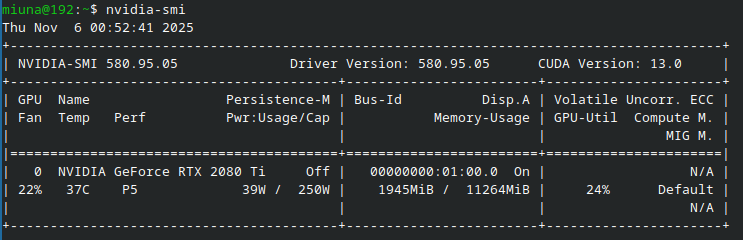

vc ta ai feliz com seu fedora novinho, ai vc abre o terminal e digita nvidia-smi pra ver sua placa de video... e...
bash: nvidia-smi: comando não encontrado...aaaaaah! (｡•́︿•̀｡) q desespero!
calma, calma! isso so quer dizer q vc ta usando o driver nouveau (q eh o driver basico q vem com o linux), e nao o driver oficial (proprietario) da nvidia q faz seus jogos e apps rodarem lisinho!
"mas nao tem um app pra clicar e instalar?"
no fedora, o jeito mais recomendado eh usar o terminal com o rpm fusion. parece dificil, mas eh super facil!
1. Adicionando o RPM Fusion
primeiro, a gente precisa falar pro fedora onde achar os drivers. o rpm fusion eh o lugar safe pra isso. Instale os repos free e o nonfree:
2. Dando um update
depois de adicionar, vamos dar um update pra ter certeza q o sistema leu os pacotes novos:
sudo dnf update -y3. Instalando o Driver!
agora sim! esse comando vai instalar o driver akmod, q eh inteligente e se "constroi" sozinho toda vez q seu kernel atualizar (entao nunca quebra! acho!):
sudo dnf install akmod-nvidiase vc joga ou usa apps q precisam de cuda, instala isso tbm:
sudo dnf install xorg-x11-drv-nvidia-cuda4. O PASSO MAIS IMPORTANTE: ESPERAR!
eu sei q vc quer reiniciar o pc correndo, mas NAO REINICIA AINDA!
o akmod ta trabalhando agora, construindo o driver. isso demora uns 2 a 5 minutos.
5. Reboot e a Hora da Verdade!
ok, esperou 5 minutinhos? agora sim!
manda um reboot no terminal.
quando seu pc ligar, abre o terminal e... tenta o comando de novo:
nvidia-smise tudo deu certo, vc vai ver uma tela linda tipo essa:
